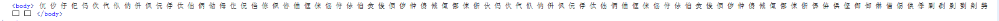
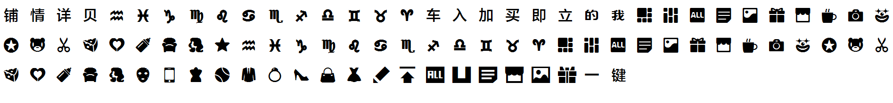

语法：
@font-face {
font-family : 字体名称;
src : 字体文件在服务器上的相对或绝对路径;
}
说明：
@font-face能够加载服务器端的字体文件，让浏览器端显示用户电脑里没有安装的字体
使用方法：
@font-face {font-family: "iconfont";
src: url('../iconfont/iconfont.eot'); /* IE9*/
src: url('../iconfont/iconfont.eot?#iefix') format('embedded-opentype'), /* IE6-IE8 */
url('../iconfont/iconfont.woff') format('woff'), /* chrome、firefox */
url('../iconfont/iconfont.ttf') format('truetype'), /* chrome、firefox、opera、Safari, Android, iOS 4.2+*/
url('../iconfont/iconfont.svg#iconfont') format('svg'); /* iOS 4.1- */
}
.iconfont {
font-family: "iconfont"!important;
font-size:16px;
font-style:normal;
-webkit-font-smoothing: antialiased;
-webkit-text-stroke-width: 0.2px;
-moz-osx-font-smoothing: grayscale;
}
兼容性（同时支持.woff,.ttf,.otf,.svg格式的版本将被视为完全实现该属性）：
只要下载各个浏览器支持的字体，浏览器便可识别。。
- 浅绿 = 支持
- 红色 = 不支持
- 粉色 = 部分支持
| Values | IE | Firefox | Chrome | Safari | Opera | iOS Safari | Android Browser | Android Chrome |
|---|---|---|---|---|---|---|---|---|
| Basic Support | 6.0+ | 2.0+ | 4.0+ | 3.1+ | 15.0+ | 3.2+ | 2.1+ | 18.0+ |
| eot | 6.0+ | 2.0-38.0 | 4.0-43.0 | 3.1-8.1 | 5.0-28.0 | 3.2-8.1 | 2.1-4.4.4 | 18.0-40.0 |
| ttf/otf | 6.0-8.0 | 2.0-3.0 | 4.0+ | 3.1+ | 15.0+ | 3.2-4.1 | 2.1 | 18.0+ |
| 9.0+ | 3.5+ | 4.3+ | 2.2+ | |||||
| woff | 6.0-8.0 | 2.0-3.5 | 4.0 | 3.1-5.0 | 15.0+ | 3.2-4.3 | 2.1-4.3 | 18.0+ |
| 9.0+ | 3.6+ | 5.0+ | 5.1+ | 5.0+ | 4.4+ | |||
| svg | 6.0-11.0 | 2.0-38.0 | 4.0-37.0 | 3.1 | 15.0-24.0 | 3.2+ | 2.1-2.3 | 18.0-37.0 |
| 38.0-43.0 #1 | 3.2+ | 25.0-28.0 #1 | 3.0+ | 38.0-43.0 #1 |
- 策略修改为只支持windows vista/xp上的svg fonts
事例：
你下载什么字体。用的时候就呈现什么字体
上面的"使用方法"中的代码，可以把下面body里的字变成不一样的图标

↓

Iconfont-阿里巴巴矢量图标库就是应用了此方法http://iconfont.cn/